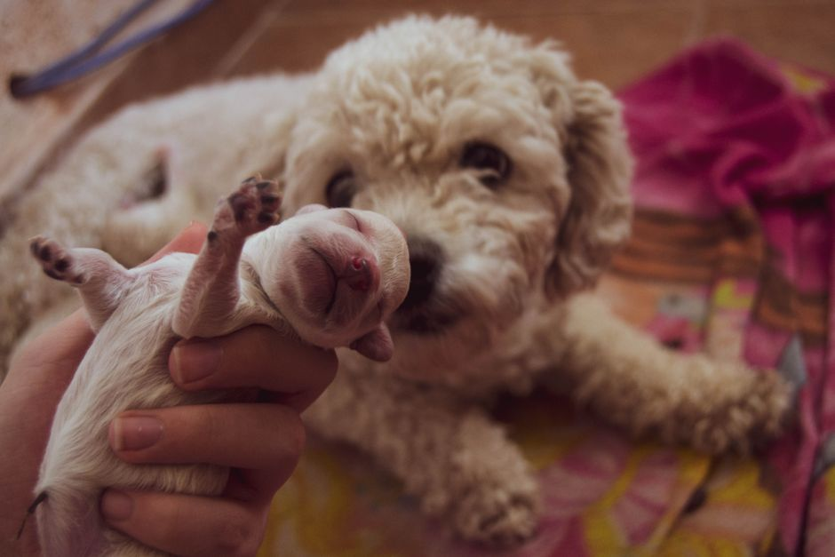
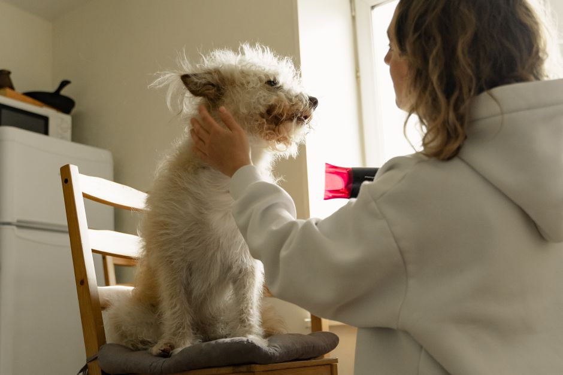

Cuidados de higiene para mantener el brillo de tu mascota

Photo: Briseed ~ / Pexels
Tener una mascota es un gran compromiso, pero también una gran responsabilidad. Uno de los aspectos más importantes en el cuidado de tu mascota es mantener su higiene. A continuación, te presentamos 7 técnicas de toilette para mantener el brillo de tu mascota, independientemente de su especie.
1. Bañar a tu mascota con regularidad
Depende de la especie, pero generalmente, un baño mensual es suficiente. Las mascotas con pelaje largo o grueso pueden necesitar baños más frecuentes. Para un perro de pelo corto, un baño cada 3 meses es recomendable.
Ejemplo: Si tienes un perro de pelo largo, como un golden retriever, es posible que necesites bañarlo cada 4 a 6 semanas. Asegúrate de usar shampoo para mascotas, ya que los productos para humanos pueden irritar la piel de tu mascota.
2. Secar bien después de bañar

Photo: Yaroslav Shuraev / Pexels
Luego de un baño, es fundamental secar bien a tu mascota para prevenir que se resfriéndan. Si tu mascota tiene pelaje largo, usa un secador de pelo a baja temperatura o un secador de ropa para secar su pelo sin dañarlo.
Ejemplo: Después de bañar a tu perro, pasa un secador de ropa a baja temperatura por todo su pelaje para evitar que se enfríe. Asegúrate de mantener el secador a una distancia segura para que no te queme el pelo de tu mascota.
3. Rociar con aceite hidratante
Rociar aceite hidratante en la piel y el pelo de tu mascota puede ayudar a mantener su brillo y su salud. Asegúrate de usar un producto específico para mascotas y aplicarlo regularmente.
Ejemplo: Si tu gato tiene pelo largo, rocíalo con un poco de aceite hidratante para mascotas de 2 a 3 veces por semana. Esto no solo ayudará a mantener su pelo brillante, sino que también lo hará sentirse más cómodo.
4. Aseo ocular y nasal
Es importante limpiar los ojos y las narinas de tu mascota con regularidad para evitar infecciones. Usa un paño húmedo para limpiar sus ojos y una solución de agua tibia para limpiar su nariz.
Ejemplo: Cada día, limpia los ojos y las narinas de tu gato con un paño húmedo. Asegúrate de no presionar demasiado para evitar incomodar a tu mascota.
5. Peinar o acicalar con regularidad
El acicalamiento regular no solo ayuda a mantener el brillo del pelo de tu mascota, sino que también puede ayudar a prevenir nudos y enredos. Peina a tu perro o gato 2 a 3 veces por semana con una peine suave.
Ejemplo: Peina a tu perro con una peine suave 3 veces por semana para mantener su pelo libre de nudos. Si tu perro tiene pelo largo, puedes aumentar el número de peinados a 5 o 6 veces por semana.
6. Cepillar los dientes
Los problemas de salud bucal pueden afectar la salud general de tu mascota. Cepilla los dientes de tu perro o gato con un cepillo dental específico para mascotas y pasta dental una vez al día para prevenir problemas.
Ejemplo: Cepilla los dientes de tu perro con un cepillo dental y pasta dental específicos para mascotas una vez al día. Esto no solo ayudará a mantener su sonrisa brillante, sino que también a prevenir problemas de salud bucal.
7. Visita al veterinario regularmente
Finalmente, asegúrate de llevar a tu mascota al veterinario regularmente para que se le realicen chequeos y se le realicen las vacunas necesarias. Una buena higiene y cuidados veterinarios juntos mantendrán a tu mascota saludable y linda.
Ejemplo: Asegúrate de llevar a tu perro al veterinario para un chequeo anual. Esto no solo ayudará a detectar problemas de salud temprano, sino que también te permitirá mantener un control sobre la higiene y el cuidado de tu mascota.
Siguiendo estos sencillos pasos, podrás mantener el brillo y la salud de tu mascota. Recuerda que cada mascota es única, así que es importante adaptar estos consejos a las necesidades específicas de tu animal de compañía.